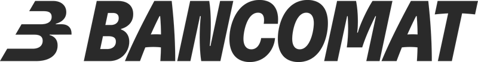
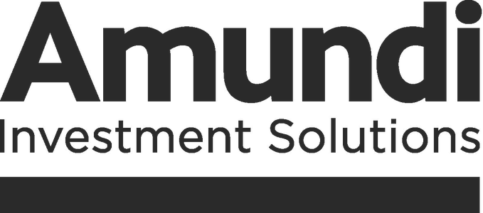
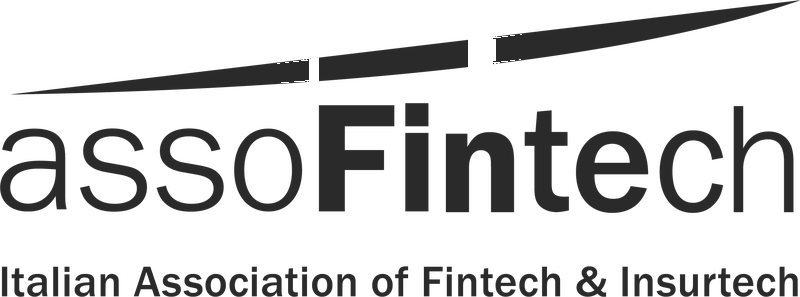
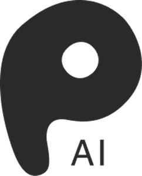
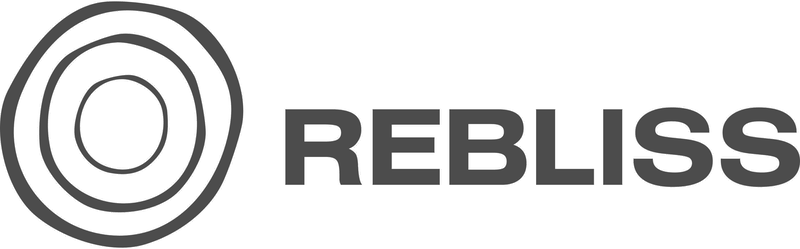
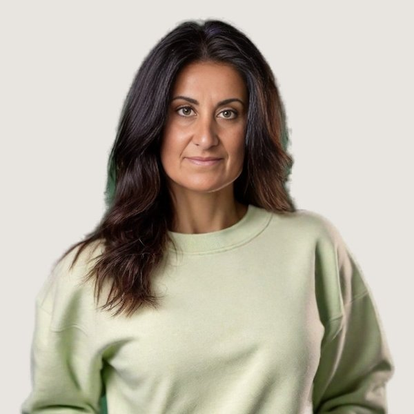
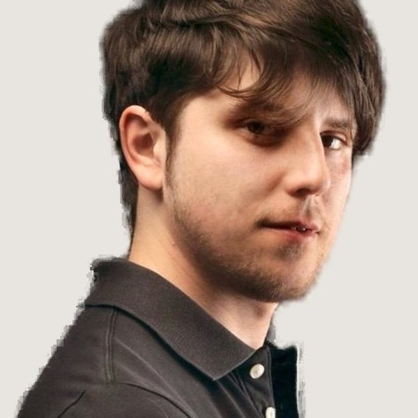
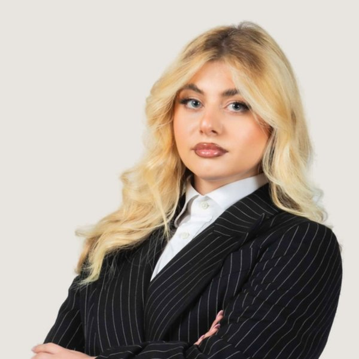

Comunicazione dell'innovazione · Milano
PR e contenuti strategici per chi porta innovazione in mercati esposti: fintech e finanza digitale, intelligenza artificiale, tecnologia, longevity, istituzioni. La reputazione richiede anni per costruirsi e pochi giorni per incrinarsi. Noi lavoriamo sugli anni.
Il nostro manifesto
Siamo una boutique indipendente con base a Milano. Raccontiamo l'innovazione a chi deve capirla, sceglierla o regolarla: giornalisti, investitori, istituzioni, clienti. Lavoriamo in mercati complessi, dove ogni parola viene letta con attenzione, e costruiamo autorevolezza con metodo, continuità e relazioni curate nel tempo.
Hanno lavorato con noi


FUTURE


Cosa facciamo
01
Portiamo aziende e idee sulle testate che contano, nazionali e di settore. Relazioni con i giornalisti costruite negli anni, notizie preparate con cura, uscite misurabili.
02
Diamo a founder e manager una voce pubblica riconoscibile. LinkedIn, interventi, interviste, podcast: presidiamo i luoghi dove si forma l'opinione su un settore.
03
Articoli, newsletter, social e formati editoriali che rendono leggibile una competenza tecnica. Scriviamo per chi decide, con il ritmo e la precisione di una redazione.
04
Forum, conferenze, lanci. Progettiamo occasioni che diventano notizia e mettono allo stesso tavolo aziende, istituzioni e media.
I risultati parlano
Policy & Finance Digitale
Progetto fondato da Polyhedra. Un ecosistema dedicato alla finanza digitale che ha riunito istituzioni, banche e fintech nella Sala della Lupa di Montecitorio per un confronto ad alto livello su stablecoin, euro digitale e tokenizzazione. Organizzato il 4 febbraio 2026 in collaborazione con PwC Italia e Wirex, con il patrocinio del Parlamento Europeo, di AssoFintech e di AssoCASP.
Innovation & Global Trends
Comunicazione e PR per un forum istituzionale di alto profilo su longevità, economia e futuro. Format innovativo a salotti tematici con initial commentators e discussione aperta. Presente il Ministro Giancarlo Giorgetti con contributi di visione strategica e istituzionale.
Finance & Crypto
Media relations in Italia per uno dei principali crypto exchange globali. Cena istituzionale e posizionamento mediatico con 35 uscite Tier 1 su testate nazionali e di settore.
Finance & Crypto
PR e contenuti strategici per uno dei player globali nel settore crypto e pagamenti digitali. Posizionamento mediatico e thought leadership nel mercato italiano.
Policy, Finance & Innovation
Thought leadership, LinkedIn, articoli, ufficio stampa e podcast per una delle community di pensiero più attive in Italia. Finanza, geopolitica, innovazione e futuro, con eventi a Milano, Roma, Torino e Washington. Ogni voce del network posizionata come riferimento nel proprio settore.
Come lavoriamo
01 · Ascolto & Analisi
Studiamo il brand, il mercato e i concorrenti per trovare lo spazio narrativo da presidiare. Ogni strategia nasce da zero.
02 · Strategia
Messaggi chiave, testate di riferimento e piano editoriale, legati agli obiettivi di business.
03 · Esecuzione
Media relations, contenuti ed eventi lavorano insieme, mese dopo mese, sulla stessa narrativa.
04 · Misurazione
Report chiari e indicatori concreti. Sai sempre cosa stiamo facendo, perché, e con quali risultati.
Eventi, rubriche, uscite
Evento · Febbraio 2026
Il Rome Policy Forum 2026 ha riunito nella Sala della Lupa istituzioni, banche e fintech su stablecoin, euro digitale e tokenizzazione. Apertura dell'On. Maurizio Lupi, interventi di Banca d'Italia e della Commissione Finanze della Camera.
La Mia Finanza ↗
Rubrica NEXT · Intervista
Lorenzo Rigatti, CEO e co-fondatore di BlockInvest, racconta come la tokenizzazione è passata dalla sperimentazione al mercato.
PPN ADI ↗
Rubrica NEXT · Analisi · Agosto 2026
Litio, rame e terre rare reggono l'infrastruttura dell'intelligenza artificiale. La loro lavorazione dipende ancora in gran parte da fuori Europa.
PPN ADI ↗
Rubrica NEXT · Analisi
Il report BCE sulle abitudini di pagamento di oltre 8.000 imprese dell'area euro, letto con gli occhi di chi lavora sull'innovazione finanziaria.
PPN ADI ↗
Pensieri & Analisi
01
La reputazione del CEO è diventata un asset aziendale, con un valore misurabile e una fragilità altrettanto reale.
Leggi l'articolo →02
Mandare comunicati è una tattica. Costruire reputazione richiede un disegno, un'intenzione e tempo.
Leggi l'articolo →03
Chi chiama un'agenzia PR il giorno del lancio ha già perso tre mesi. La reputazione è un deposito che si accumula nel tempo.
Leggi l'articolo →Le persone
Siamo un team di oltre 10 professionisti tra PR, contenuti e comunicazione strategica. Abbiamo scelto di specializzarci: seguiamo chi fa innovazione e conosciamo i suoi interlocutori, dalle redazioni economiche alle istituzioni. Abbastanza grandi da coprire ogni fronte, abbastanza agili da curare ogni dettaglio.

Sara Noggler
Founder & CEO
Dodici anni di comunicazione nella finanza e nel fintech. LinkedIn Top Voice sulla finanza digitale, membro del comitato scientifico di Assofintech, vicepresidente del Sandwich Club. Ha fondato Future Blend, piattaforma istituzionale sulla finanza digitale.
LinkedIn →Barbara Robecchi
Senior Media Relations
Cura le relazioni con le redazioni nazionali e di settore. Segue l'ufficio stampa dei clienti dalla strategia alla singola uscita.

Davide Sica
Content Editor
Trasforma competenze tecniche in articoli, newsletter e contenuti editoriali. Presidia tono e qualità della scrittura su ogni canale.

Virginia Milano
Marketing & Communication
Coordina i progetti di marketing e comunicazione, dagli eventi ai canali social. Tiene insieme calendario, messaggi e risultati.
Domande frequenti
Polyhedra è una boutique indipendente di PR e contenuti strategici con base a Milano, fondata da Sara Noggler nel 2018. Si occupa di comunicazione dell'innovazione: ufficio stampa e media relations, thought leadership per founder e manager, contenuti editoriali ed eventi istituzionali.
Fintech e finanza digitale, crypto e blockchain, intelligenza artificiale e tecnologia, wellness e longevity, policy e istituzioni. Tra i progetti seguiti ci sono Gemini, Wirex, Sandwich Club, Rebliss e il Rome Policy Forum di Future Blend.
Sì. Accompagniamo aziende internazionali che entrano nel mercato italiano, come Gemini e Wirex, costruendo la loro presenza sulle testate nazionali e di settore e i rapporti con le istituzioni.
È il lavoro che rende founder e manager voci riconoscibili del loro settore. Definiamo posizionamento e linea editoriale, scriviamo i contenuti insieme alla persona e ne misuriamo l'effetto su reputazione e opportunità.
Future Blend è la piattaforma istituzionale sulla finanza digitale fondata da Polyhedra. Il 4 febbraio 2026 ha organizzato il Rome Policy Forum nella Sala della Lupa di Montecitorio, in collaborazione con PwC Italia e Wirex e con il patrocinio del Parlamento Europeo, di AssoFintech e di AssoCASP.
Basta scriverci dal modulo in fondo alla pagina. Il primo incontro serve a capire obiettivi, pubblici e tempi; da lì prepariamo una proposta su misura.
Inizia un progetto
Raccontaci il tuo progetto. Valutiamo insieme se possiamo costruire qualcosa che dura.